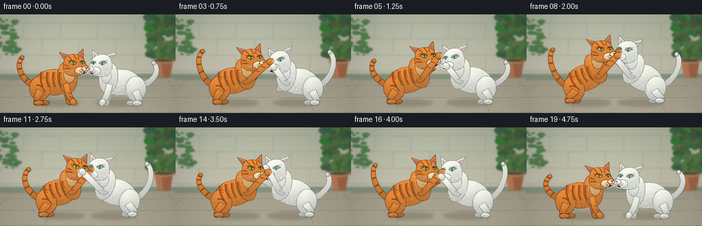
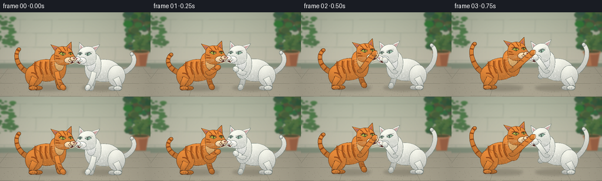

CODING AGENTS AS PIXEL WORLD MODELS
traex/GPT-6.1-Sol · instance_preservation_0005
点击播放 · 原生 RGB 像素
逐轮保存的候选
回放视频、检查图与代码变化。
每份候选均可单独播放。实际图片检查记录在下方工具轨迹中。
候选 01播放与检查图
点击播放 · 原生 RGB 像素


展开代码变化
--- 上一保存版本
+++ 本次保存版本
@@ -0,0 +1,322 @@
+"""A deterministic, hand-drawn RGB animation; no external assets or models."""
+from pathlib import Path
+import math
+import json
+import numpy as np
+from PIL import Image, ImageDraw, ImageFilter
+from artifact_io import save
+
+ROOT=Path(__file__).resolve().parent
+SPEC=json.loads((ROOT/'task_spec.json').read_text())
+W,H=SPEC['width'],SPEC['height']
+S=3
+SW,SH=W*S,H*S
+rng=np.random.default_rng(513)
+
+def pts(p): return [(round(x*S),round(y*S)) for x,y in p]
+def bezier(p,n=25):
+ p=np.array(p,float); t=np.linspace(0,1,n)[:,None]
+ if len(p)==4: return (1-t)**3*p[0]+3*(1-t)**2*t*p[1]+3*(1-t)*t*t*p[2]+t**3*p[3]
+ return (1-t)**2*p[0]+2*(1-t)*t*p[1]+t*t*p[2]
+def curve(draw,p,color,width=1): draw.line(pts(bezier(p)),fill=color,width=max(1,round(width*S)),joint='curve')
+def ell(draw,box,color): draw.ellipse(tuple(round(v*S) for v in box),fill=color)
+
+# Still, softly out-of-focus sunlit courtyard, with a textured stone floor.
+y,x=np.mgrid[0:SH,0:SW]; xx=x/S; yy=y/S
+noise=rng.normal(0,1.1,(SH,SW))
+wall=np.stack([171+0.26*yy,178+0.13*yy,157+0.16*yy],axis=-1)
+floor=np.stack([163+.31*(yy-93),157+.30*(yy-93),138+.27*(yy-93)],axis=-1)
+base=np.where((yy>92)[...,None],floor,wall)
+sun=9*np.exp(-((xx-80)**2/9500+(yy-25)**2/4000))
+base=np.clip(base+sun[...,None]+noise[...,None],0,255).astype('uint8')
+background=Image.fromarray(base); bg=ImageDraw.Draw(background)
+# Garden wall mortar, imperfect horizontal courses.
+for row,Y in enumerate([12,35,59,82]):
+ curve(bg,[(0,Y),(90,Y+.5),(175,Y-.3),(256,Y+.4)],(148,157,139),.7)
+ curve(bg,[(0,Y+1),(90,Y+1.4),(175,Y+1),(256,Y+1.4)],(187,190,168),.6)
+ for X in range(-20+(row%2)*27,260,54):
+ curve(bg,[(X,Y),(X+.5,Y+11),(X-1,Y+22)],(151,160,144),.7)
+# Coping along bottom wall.
+bg.polygon(pts([(0,86),(256,86),(256,93),(0,96)]),fill=(133,145,125))
+bg.line(pts([(0,87),(256,86)]), fill=(191,195,173),width=S)
+# Distant foliage framing the action, a terra-cotta planter.
+for i in range(200):
+ cx=float(rng.uniform(216,274)); cy=float(rng.uniform(-12,64))
+ rr=float(rng.uniform(2,8)); col=(int(rng.uniform(52,94)),int(rng.uniform(88,126)),int(rng.uniform(56,78)))
+ ell(bg,(cx-rr,cy-rr*.7,cx+rr,cy+rr*.7),col)
+for i in range(65):
+ cx=float(rng.uniform(-15,27)); cy=float(rng.uniform(5,62)); rr=float(rng.uniform(2,6))
+ ell(bg,(cx-rr,cy-rr*.5,cx+rr,cy+rr*.5),(85,118+int(rng.uniform(0,19)),80))
+bg.polygon(pts([(225,68),(252,68),(248,92),(230,92)]),fill=(159,101,72))
+bg.polygon(pts([(225,68),(235,68),(238,91),(230,91)]),fill=(184,122,85))
+ell(bg,(223,64,254,72),(185,128,94))
+ell(bg,(225,65,252,69),(83,83,56))
+for i in range(30):
+ X=float(rng.uniform(229,249)); Y=float(rng.uniform(40,64))
+ curve(bg,[(239,67),(236,49),(X,Y)],(65,103,62),1.3)
+ ell(bg,(X-4,Y-2,X+4,Y+2),(87,121,69))
+background=background.filter(ImageFilter.GaussianBlur(1.1*S))
+# Subdued perspective lines and tiny gravel in the paving.
+bg=ImageDraw.Draw(background)
+for Y in [104,121,143]:
+ curve(bg,[(0,Y),(84,Y-.8),(177,Y+1),(256,Y)],(142,138,120),.65)
+ curve(bg,[(0,Y+1),(84,Y+.1),(177,Y+1.8),(256,Y+1)],(182,175,154),.45)
+for a,b in [((15,94),(-24,144)),((82,94),(65,144)),((177,94),(203,144)),((243,94),(282,144))]:
+ bg.line(pts([a,b]),fill=(146,143,125),width=2)
+for i in range(300):
+ X=float(rng.uniform(0,256)); Y=float(rng.uniform(96,144)); r=float(rng.uniform(.12,.4))
+ ell(bg,(X-r,Y-r,X+r,Y+r),(153,148,128))
+
+# Render volumetric fur into curved silhouettes at supersampled resolution.
+YGRID,XGRID=np.mgrid[0:SH,0:SW]; XGRID=XGRID/S; YGRID=YGRID/S
+FURNOISE=np.random.default_rng(961).normal(0,1,(SH,SW)).astype(np.float32)
+
+class Cat:
+ def __init__(self,image,orange,cx,cy,direction,rise,time,arm1,arm2,headtilt=0):
+ self.im=image; self.d=ImageDraw.Draw(image)
+ self.orange=orange; self.cx=cx; self.cy=cy; self.dir=direction
+ self.rise=rise; self.t=time; self.angle=-.36*rise
+ self.base=(215,130,54) if orange else (226,229,218)
+ self.out=(101,61,31) if orange else (122,133,127)
+ self.dark=(139,72,30) if orange else (178,185,177)
+ self.arm1=arm1; self.arm2=arm2
+ self.hc=np.array([26-5*rise,-27-17*rise])
+ self.ht=headtilt
+ self.furrng=np.random.default_rng(45 if orange else 78)
+ def world(self,p):
+ p=np.asarray(p); return np.stack([self.cx+self.dir*p[...,0],self.cy+p[...,1]],axis=-1)
+ def bodypoint(self,p):
+ a=self.angle; X,Y=p
+ return np.array([X*math.cos(a)-Y*math.sin(a),X*math.sin(a)+Y*math.cos(a)-5*self.rise])
+ def hp(self,p):
+ p=np.asarray(p); a=self.ht
+ q=np.stack([p[...,0]*math.cos(a)-p[...,1]*math.sin(a),p[...,0]*math.sin(a)+p[...,1]*math.cos(a)],axis=-1)
+ return q+self.hc
+ def line(self,p,color,width=1,head=False):
+ p=self.hp(p) if head else p
+ self.d.line(pts(self.world(p)),fill=color,width=max(1,round(width*S)),joint='curve')
+ def c(self,p,color,width=1,head=False): self.line(bezier(p),color,width,head)
+ def poly(self,p,color,head=False):
+ if head:p=self.hp(p)
+ self.d.polygon(pts(self.world(p)),fill=color)
+ def shape(self,local,col=None,fur=0,shade=.22):
+ world=self.world(local); mask=Image.new('L',(SW,SH)); md=ImageDraw.Draw(mask)
+ md.polygon(pts(world),fill=255)
+ xmin,ymin=world.min(0); xmax,ymax=world.max(0)
+ lx=max(0,int(xmin*S)-3); rx=min(SW,int(xmax*S)+4)
+ ly=max(0,int(ymin*S)-3); ry=min(SH,int(ymax*S)+4)
+ if rx<=lx or ry<=ly:return
+ gx=XGRID[ly:ry,lx:rx]; gy=YGRID[ly:ry,lx:rx]
+ v=(gy-ymin)/max(1,ymax-ymin); u=(gx-xmin)/max(1,xmax-xmin)
+ light=1.075-shade*v+0.065*np.exp(-((u-.35)**2/.12+(v-.29)**2/.13))
+ # Warm key light and cool shaded undersides, with very fine fur grain.
+ rgb=np.array(col or self.base)[None,None,:]*light[...,None]
+ rgb+=FURNOISE[ly:ry,lx:rx,None]*1.6
+ rgb[:,:,0]+=3*(1-v); rgb[:,:,2]+=4*v
+ patch=Image.fromarray(np.uint8(np.clip(rgb,0,255)))
+ self.im.paste(patch,(lx,ly),mask.crop((lx,ly,rx,ry)))
+ self.d=ImageDraw.Draw(self.im)
+ self.d.line(pts(np.vstack([world,world[0]])),fill=self.out,width=2,joint='curve')
+ if fur:
+ ar=np.asarray(mask)
+ for i in range(fur):
+ X=self.furrng.uniform(xmin,xmax); Y=self.furrng.uniform(ymin,ymax)
+ ix,iy=int(X*S),int(Y*S)
+ if ix<0 or iy<0 or ix>=SW or iy>=SH or ar[iy,ix]<128: continue
+ length=self.furrng.uniform(.45,1.5)
+ fcol=tuple(min(255,int(c*1.12+5)) for c in (col or self.base))
+ self.d.line(pts([(X,Y),(X-self.dir*.4,Y+length)]),fill=fcol,width=1)
+ def oval(self,center,rx,ry,angle=0,col=None,fur=0):
+ t=np.linspace(0,2*math.pi,80)
+ p=np.stack([rx*np.cos(t),ry*np.sin(t)],axis=-1)
+ c,s=math.cos(angle),math.sin(angle)
+ p=np.stack([c*p[:,0]-s*p[:,1],s*p[:,0]+c*p[:,1]],axis=-1)+center
+ self.shape(p,col,fur)
+ def tube(self,control,radius,col=None,fur=0,taper=.9):
+ p=bezier(control,35); grad=np.gradient(p,axis=0); norm=np.sqrt((grad**2).sum(1))
+ tangent=grad/np.maximum(norm[:,None],.01); normals=np.stack([-tangent[:,1],tangent[:,0]],axis=-1)
+ rr=np.linspace(radius,radius*taper,len(p))[:,None]
+ self.shape(np.vstack([p+normals*rr,(p-normals*rr)[::-1]]),col,fur)
+ self.oval(p[-1],radius*taper,radius*taper,col=col)
+ def tabby(self,p,width=1.7,head=False):
+ if self.orange:self.c(p,(154,78,29),width,head)
+ def tail(self):
+ lash=math.sin(self.t*5.7+(0 if self.orange else 1))*9
+ root=self.bodypoint((-30,3))
+ tip=(-51+3*math.sin(self.t*3),-38+lash)
+ control=[root,(-52,-2),(-61,-28+lash),tip]
+ self.tube(control,4.6,fur=65,taper=.66)
+ if self.orange:
+ path=bezier(control,35)
+ for i in [9,15,21,27,32]:
+ p=path[i]; g=path[min(i+1,34)]-path[max(i-1,0)]; n=np.array([-g[1],g[0]])/(np.linalg.norm(g)+1e-5)
+ self.line([p-n*3.4,p+n*3.4],(151,77,28),2.3)
+ def hindleg(self,far=False):
+ hip=self.bodypoint((-24,10)); paw=np.array([-25+(4 if far else -5),28])
+ hock=np.array([-30+(4 if far else 0),20])
+ col=tuple(int(c*.86) for c in self.base) if far else self.base
+ self.tube([hip,hip+[-4,8],hock,paw],5.6,col,fur=25,taper=.69)
+ self.oval(paw+[3,0],7,3.6,col=col,fur=10)
+ for i in [2,5]:self.c([paw+[i,-1],paw+[i+.7,0],paw+[i,2]],self.out,.45)
+ def arm(self,paw,far=False):
+ shoulder=self.bodypoint((13,-5 if far else 0))
+ target=np.array(paw)
+ midpoint=(shoulder+target)/2+np.array([-3,4])
+ col=tuple(int(c*.88) for c in self.base) if far else self.base
+ self.tube([shoulder,shoulder+[2,7],midpoint,target],4.2,col,fur=25,taper=1.05)
+ ang=math.atan2(target[1]-midpoint[1],target[0]-midpoint[0])
+ self.oval(target,5.4,4.5,ang,col,fur=14)
+ if self.orange:
+ for f in [.5,.72]:
+ p=shoulder*(1-f)+target*f
+ self.c([p+[-3,-1],p+[0,0],p+[3,1]],(157,82,35),1.5)
+ if target[1]<-9:
+ for delta in [-2,0,2]:
+ self.c([target+[3,delta],target+[6,delta-1],target+[7,delta-.5]],(244,240,220),.65)
+ else:
+ for z in [-1.7,1.4]:self.c([target+[2,z],target+[4,z+.3],target+[4,z+1.5]],self.out,.4)
+ def head(self):
+ # Flat, backward pinned ears and a wide feline cheek / short projecting muzzle.
+ for e in [[(-14,-7),(-22,-20),(-7,-15)],[(2,-13),(13,-23),(13,-5)]]:
+ self.shape(self.hp(np.array(e)),fur=12)
+ self.poly([(-14,-10),(-19,-17),(-9,-14)],(182,111,98) if self.orange else (206,168,165),True)
+ self.poly([(6,-13),(11,-19),(11,-9)],(185,109,94) if self.orange else (207,171,169),True)
+ outline=np.vstack([
+ bezier([(-15,-8),(-12,-19),(5,-18),(12,-10)]),
+ bezier([(12,-10),(15,-5),(15,-1),(19,3)]),
+ bezier([(19,3),(22,9),(10,16),(0,16)]),
+ bezier([(0,16),(-11,17),(-21,11),(-15,-8)])])
+ self.shape(self.hp(outline),fur=170,shade=.20)
+ # cheek hairs that break the silhouette.
+ for i in range(9):
+ p=(-13-i*.28,3+i*1.05)
+ self.line([self.hp(p),self.hp((p[0]-2.1,p[1]+1.3))],self.base,.6)
+ # Orange tabby facial stripes and crown M; pure-white face is kept white.
+ self.tabby([(-9,-13),(-6,-12),(-4,-7)],1.8,True)
+ self.tabby([(-1,-15),(1,-11),(3,-8)],1.6,True)
+ self.tabby([(6,-13),(5,-10),(6,-8)],1.4,True)
+ self.tabby([(-15,-1),(-12,0),(-9,1)],1.6,True)
+ self.tabby([(-15,4),(-11,4),(-7,5)],1.6,True)
+ muzzle=(239,211,169) if self.orange else (242,242,233)
+ self.oval(self.hp((8,8)),8,5.5,self.ht,muzzle,fur=30)
+ self.oval(self.hp((15,6)),5.1,4.2,self.ht,muzzle,fur=18)
+ # Narrow, angry almond eyes, dark eyeliner and slit pupils.
+ for eye,near in [([(-9,-4),(-4,-7),(3,-3),(-2,-.1)],True), ([(7,-4),(11,-6),(15,-3),(11,-.8)],False)]:
+ self.poly(eye,(67,66,43) if self.orange else (86,100,92),True)
+ inset=[(-8,-3.8),(-4,-5.7),(2,-3),(-2,-1)] if near else [(8,-3.6),(11,-4.9),(14,-3),(11,-1.5)]
+ self.poly(inset,(180,187,76) if self.orange else (149,187,165),True)
+ ex=-2 if near else 11
+ self.line([(ex,-4.9),(ex,-1.5)],(22,32,27),1.1,True)
+ self.oval(self.hp((ex-.7,-4)),.52,.55,col=(255,255,231))
+ self.line([eye[0],eye[1],eye[2]],(77,53,35) if self.orange else (108,119,111),.9,True)
+ self.c([(-10,-7),(-3,-8),(3,-5)],self.dark,1,True)
+ self.c([(7,-6),(11,-7),(15,-5)],self.dark,.8,True)
+ # Nose, snarl, little pointed canine teeth, whisker follicles.
+ self.poly([(14,4),(19,3.6),(17,7)],(145,83,77) if self.orange else (175,125,129),True)
+ self.line([(17,6),(16,9)],(101,73,63),.6,True)
+ self.poly([(9,10),(16,8.5),(17,11.7),(11,14)],(84,47,44),True)
+ self.poly([(10,10),(12,10),(11,12.7)],(255,248,221),True)
+ self.poly([(15,9.6),(16.5,9.2),(15.6,11.9)],(255,248,227),True)
+ self.c([(7,10),(11,10),(16,8.5)],self.out,.55,True)
+ self.c([(9,14),(13,15),(17,12)],muzzle,.8,True)
+ for p in [(9,6.5),(11,7.3),(7,8),(12,8.4)]:self.oval(self.hp(p),.28,.28,col=self.out)
+ for j in range(3):
+ self.c([(10,8+j*.8),(22,5+j*3),(31,3+j*5)],(232,220,188) if self.orange else (247,247,237),.4,True)
+ self.c([(-2,8+j),(-12,7+j*3),(-22,8+j*4)],(229,208,172) if self.orange else (236,238,230),.38,True)
+ def render(self):
+ self.tail(); self.hindleg(True); self.arm(self.arm2,True)
+ self.oval(self.bodypoint((-4,-2)),28,19,self.angle,self.base,fur=340)
+ self.oval(self.bodypoint((-25,7)),15,18,self.angle,self.base,fur=160)
+ self.oval(self.bodypoint((15,-9)),14,23,self.angle-.10,self.base,fur=140)
+ if self.orange:
+ for X in [-23,-14,-5,4]:
+ self.c([self.bodypoint((X,-17)),self.bodypoint((X-3,-7)),self.bodypoint((X+2,5))],(160,82,29),2.5)
+ self.c([self.bodypoint((X+3,-17)),self.bodypoint((X,-10)),self.bodypoint((X+3,-5))],(182,95,32),.9)
+ self.c([self.bodypoint((-30,2)),self.bodypoint((-22,1)),self.bodypoint((-18,12))],(153,78,31),2)
+ self.c([self.bodypoint((-31,9)),self.bodypoint((-25,8)),self.bodypoint((-23,17))],(157,82,33),1.7)
+ else:
+ self.c([self.bodypoint((-10,12)),self.bodypoint((0,17)),self.bodypoint((11,14))],(205,212,203),.8)
+ self.hindleg(False)
+ # Pale throat catches the light and separates head from the shoulder.
+ self.oval(self.hc+[-8,13],8,13,self.ht,(227,180,114) if self.orange else (237,239,231),fur=60)
+ self.head(); self.arm(self.arm1,False)
+
+# Two persistent characters perform a sequence of reciprocal swats and close grappling.
+# Each tuple is (rise, front paw x/y, back front-paw x/y, forward travel, head tilt).
+A=[
+(0,(24,27),(18,26),0,-.04),
+(.1,(30,-7),(20,26),1,-.06),
+(.24,(39,-30),(21,24),3,-.10),
+(.38,(50,-31),(26,-8),5,-.08),
+(.28,(32,-17),(22,25),1,.10),
+(.50,(42,-39),(34,-22),3,-.12),
+(.48,(31,-25),(39,-37),1,.08),
+(.83,(41,-44),(37,-26),6,-.10),
+(1,(43,-38),(44,-43),7,-.10),
+(.96,(34,-47),(46,-38),7,.04),
+(.90,(49,-40),(33,-24),8,-.07),
+(.65,(38,-31),(42,-37),7,.04),
+(.27,(49,-22),(27,0),8,.14),
+(.2,(31,-17),(38,-25),4,.15),
+(.56,(45,-34),(35,-26),7,-.04),
+(.69,(36,-42),(44,-31),6,.08),
+(.55,(44,-34),(39,-22),5,-.05),
+(.33,(35,-18),(26,9),3,-.02),
+(.08,(27,26),(20,27),0,-.03),
+(0,(25,27),(18,27),-1,-.05)]
+B=[
+(0,(24,27),(18,27),0,-.03),
+(.08,(28,-4),(20,27),0,-.04),
+(.12,(31,-19),(21,25),-1,.12),
+(.24,(33,-24),(24,8),-3,.16),
+(.47,(49,-35),(28,-15),3,-.08),
+(.39,(34,-24),(35,-32),0,.10),
+(.62,(46,-40),(35,-24),4,-.10),
+(.78,(39,-37),(43,-45),5,-.08),
+(.95,(45,-43),(36,-30),6,-.10),
+(.9,(48,-38),(31,-43),7,-.06),
+(.84,(35,-42),(46,-31),4,.14),
+(.63,(46,-34),(36,-27),7,-.07),
+(.35,(31,-22),(35,-18),0,.15),
+(.53,(49,-27),(33,-21),7,-.10),
+(.55,(36,-40),(46,-26),5,.04),
+(.62,(46,-33),(37,-29),6,-.06),
+(.5,(37,-28),(45,-34),4,.06),
+(.28,(35,-18),(25,8),2,-.03),
+(.06,(27,25),(20,27),0,-.02),
+(0,(25,27),(18,27),-1,-.04)]
+
+def frame(i):
+ im=background.copy()
+ a,b=A[i],B[i]; t=i/SPEC['fps']
+ ca=83+a[3]; cb=173-b[3]
+ ya=101-3*a[0]+math.sin(t*8)*.5
+ yb=101-3*b[0]+math.sin(t*8+1)*.5
+ # Ground contact shadows, subtle airborne dust at the high-action beats.
+ sh=Image.new('RGBA',(SW,SH),(0,0,0,0)); sd=ImageDraw.Draw(sh)
+ for cx,rise in [(ca,a[0]),(cb,b[0])]:
+ ell(sd,(cx-34,124,cx+33,134),(57,52,40,58))
+ ell(sd,(cx-22,126,cx+25,131),(55,51,40,55))
+ sh=sh.filter(ImageFilter.GaussianBlur(2.2*S)); im=Image.alpha_composite(im.convert('RGBA'),sh).convert('RGB')
+ # White cat is behind the orange cat in this fixed three-quarter view.
+ white=Cat(im,False,cb,yb,-1,b[0],t,b[1],b[2],b[4]); white.render()
+ orange=Cat(im,True,ca,ya,1,a[0],t,a[1],a[2],a[4]); orange.render()
+ # White's striking paw comes forward during its turn; occlusion remains anatomical.
+ if i in [4,6,9,11,13,15,16]: white.arm(b[1],False)
+ if 7<=i<=16:
+ dust=Image.new('RGBA',(SW,SH),(0,0,0,0)); dd=ImageDraw.Draw(dust)
+ for j in range(10):
+ phase=(i*.27+j*.36)%1
+ X=126+math.sin(j*5.23)*17*phase; Y=128-10*phase
+ ell(dd,(X-.45,Y-.4,X+.45,Y+.4),(217,204,170,int(58*(1-phase))))
+ im=Image.alpha_composite(im.convert('RGBA'),dust).convert('RGB')
+ # Gentle photographic falloff rather than graphic outlines on the background.
+ arr=np.asarray(im,dtype=np.float32)
+ vign=1-.09*((XGRID-128)**2/128**2+(YGRID-75)**2/100**2)
+ arr=np.clip(arr*vign[...,None],0,255).astype('uint8')
+ return np.asarray(Image.fromarray(arr).resize((W,H),Image.Resampling.LANCZOS))
+
+if __name__=='__main__':
+ frames=np.stack([frame(i) for i in range(SPEC['frames'])]).astype(np.uint8)
+ save(frames,ROOT)
+ print(f'Saved {len(frames)} RGB frames at {W}x{H}, {SPEC["fps"]} fps.')
可观测工具轨迹
实际执行的命令与返回图片。
命令 1exit 0
/bin/bash -lc 'ls -la && cat prompt.txt && cat GENERATION_RULES.md && cat task_spec.json'
命令 2exit 0
/bin/bash -lc 'cat artifact_io.py'
命令 3exit 0
/bin/bash -lc "mkdir -p .tmp && python - <<'PY'
import numpy,PIL
print('numpy/Pillow available')
PY"命令 4exit 0
/bin/bash -lc "cat > generate.py <<'PY'
\"\"\"A deterministic, hand-drawn RGB animation; no external assets or models.\"\"\"
from pathlib import Path
import math
import json
import numpy as np
from PIL import Image, ImageDraw, ImageFilter
from artifact_io import save
ROOT=Path(__file__).resolve().parent
SPEC=json.loads((ROOT/'task_spec.json').read_text())
W,H=SPEC['width'],SPEC['height']
S=3
SW,SH=W*S,H*S
rng=np.random.default_rng(513)
def pts(p): return [(round(x*S),round(y*S)) for x,y in p]
def bezier(p,n=25):
p=np.array(p,float); t=np.linspace(0,1,n)[:,None]
if len(p)==4: return (1-t)**3*p[0]+3*(1-t)**2*t*p[1]+3*(1-t)*t*t*p[2]+t**3*p[3]
return (1-t)**2*p[0]+2*(1-t)*t*p[1]+t*t*p[2]
def curve(draw,p,color,width=1): draw.line(pts(bezier(p)),fill=color,width=max(1,round(width*S)),joint='curve')
def ell(draw,box,color): draw.ellipse(tuple(round(v*S) for v in box),fill=color)
# Still, softly out-of-focus sunlit courtyard, with a textured stone floor.
y,x=np.mgrid[0:SH,0:SW]; xx=x/S; yy=y/S
noise=rng.normal(0,1.1,(SH,SW))
wall=np.stack([171+0.26*yy,178+0.13*yy,157+0.16*yy],axis=-1)
floor=np.stack([163+.31*(yy-93),157+.30*(yy-93),138+.27*(yy-93)],axis=-1)
base=np.where((yy>92)[...,None],floor,wall)
sun=9*np.exp(-((xx-80)**2/9500+(yy-25)**2/4000))
base=np.clip(base+sun[...,None]+noise[...,None],0,255).astype('uint8')
background=Image.fromarray(base); bg=ImageDraw.Draw(background)
# Garden wall mortar, imperfect horizontal courses.
for row,Y in enumerate([12,35,59,82]):
curve(bg,[(0,Y),(90,Y+.5),(175,Y-.3),(256,Y+.4)],(148,157,139),.7)
curve(bg,[(0,Y+1),(90,Y+1.4),(175,Y+1),(256,Y+1.4)],(187,190,168),.6)
for X in range(-20+(row%2)*27,260,54):
curve(bg,[(X,Y),(X+.5,Y+11),(X-1,Y+22)],(151,160,144),.7)
# Coping along bottom wall.
bg.polygon(pts([(0,86),(256,86),(256,93),(0,96)]),fill=(133,145,125))
bg.line(pts([(0,87),(256,86)]), fill=(191,195,173),width=S)
# Distant foliage framing the action, a terra-cotta planter.
for i in range(200):
cx=float(rng.uniform(216,274)); cy=float(rng.uniform(-12,64))
rr=float(rng.uniform(2,8)); col=(int(rng.uniform(52,94)),int(rng.uniform(88,126)),int(rng.uniform(56,78)))
ell(bg,(cx-rr,cy-rr*.7,cx+rr,cy+rr*.7),col)
for i in range(65):
cx=float(rng.uniform(-15,27)); cy=float(rng.uniform(5,62)); rr=float(rng.uniform(2,6))
ell(bg,(cx-rr,cy-rr*.5,cx+rr,cy+rr*.5),(85,118+int(rng.uniform(0,19)),80))
bg.polygon(pts([(225,68),(252,68),(248,92),(230,92)]),fill=(159,101,72))
bg.polygon(pts([(225,68),(235,68),(238,91),(230,91)]),fill=(184,122,85))
ell(bg,(223,64,254,72),(185,128,94))
ell(bg,(225,65,252,69),(83,83,56))
for i in range(30):
X=float(rng.uniform(229,249)); Y=float(rng.uniform(40,64))
curve(bg,[(239,67),(236,49),(X,Y)],(65,103,62),1.3)
ell(bg,(X-4,Y-2,X+4,Y+2),(87,121,69))
background=background.filter(ImageFilter.GaussianBlur(1.1*S))
# Subdued perspective lines and tiny gravel in the paving.
bg=ImageDraw.Draw(background)
for Y in [104,121,143]:
curve(bg,[(0,Y),(84,Y-.8),(177,Y+1),(256,Y)],(142,138,120),.65)
curve(bg,[(0,Y+1),(84,Y+.1),(177,Y+1.8),(256,Y+1)],(182,175,154),.45)
for a,b in [((15,94),(-24,144)),((82,94),(65,144)),((177,94),(203,144)),((243,94),(282,144))]:
bg.line(pts([a,b]),fill=(146,143,125),width=2)
for i in range(300):
X=float(rng.uniform(0,256)); Y=float(rng.uniform(96,144)); r=float(rng.uniform(.12,.4))
ell(bg,(X-r,Y-r,X+r,Y+r),(153,148,128))
# Render volumetric fur into curved silhouettes at supersampled resolution.
YGRID,XGRID=np.mgrid[0:SH,0:SW]; XGRID=XGRID/S; YGRID=YGRID/S
FURNOISE=np.random.default_rng(961).normal(0,1,(SH,SW)).astype(np.float32)
class Cat:
def __init__(self,image,orange,cx,cy,direction,rise,time,arm1,arm2,headtilt=0):
self.im=image; self.d=ImageDraw.Draw(image)
self.orange=orange; self.cx=cx; self.cy=cy; self.dir=direction
self.rise=rise; self.t=time; self.angle=-.36*rise
self.base=(215,130,54) if orange else (226,229,218)
self.out=(101,61,31) if orange else (122,133,127)
self.dark=(139,72,30) if orange else (178,185,177)
self.arm1=arm1; self.arm2=arm2
self.hc=np.array([26-5*rise,-27-17*rise])
self.ht=headtilt
self.furrng=np.random.default_rng(45 if orange else 78)
def world(self,p):
p=np.asarray(p); return np.stack([self.cx+self.dir*p[...,0],self.cy+p[...,1]],axis=-1)
def bodypoint(self,p):
a=self.angle; X,Y=p
return np.array([X*math.cos(a)-Y*math.sin(a),X*math.sin(a)+Y*math.cos(a)-5*self.rise])
def hp(self,p):
p=np.asarray(p); a=self.ht
q=np.stack([p[...,0]*math.cos(a)-p[...,1]*math.sin(a),p[...,0]*math.sin(a)+p[...,1]*math.cos(a)],axis=-1)
return q+self.hc
def line(self,p,color,width=1,head=False):
p=self.hp(p) if head else p
self.d.line(pts(self.world(p)),fill=color,width=max(1,round(width*S)),joint='curve')
def c(self,p,color,width=1,head=False): self.line(bezier(p),color,width,head)
def poly(self,p,color,head=False):
if head:p=self.hp(p)
self.d.polygon(pts(self.world(p)),fill=color)
def shape(self,local,col=None,fur=0,shade=.22):
world=self.world(local); mask=Image.new('L',(SW,SH)); md=ImageDraw.Draw(mask)
md.polygon(pts(world),fill=255)
xmin,ymin=world.min(0); xmax,ymax=world.max(0)
lx=max(0,int(xmin*S)-3); rx=min(SW,int(xmax*S)+4)
ly=max(0,int(ymin*S)-3); ry=min(SH,int(ymax*S)+4)
if rx<=lx or ry<=ly:return
gx=XGRID[ly:ry,lx:rx]; gy=YGRID[ly:ry,lx:rx]
v=(gy-ymin)/max(1,ymax-ymin); u=(gx-xmin)/max(1,xmax-xmin)
light=1.075-shade*v+0.065*np.exp(-((u-.35)**2/.12+(v-.29)**2/.13))
# Warm key light and cool shaded undersides, with very fine fur grain.
rgb=np.array(col or self.base)[None,None,:]*light[...,None]
rgb+=FURNOISE[ly:ry,lx:rx,None]*1.6
rgb[:,:,0]+=3*(1-v); rgb[:,:,2]+=4*v
patch=Image.fromarray(np.uint8(np.clip(rgb,0,255)))
self.im.paste(patch,(lx,ly),mask.crop((lx,ly,rx,ry)))
self.d=ImageDraw.Draw(self.im)
self.d.line(pts(np.vstack([world,world[0]])),fill=self.out,width=2,joint='curve')
if fur:
ar=np.asarray(mask)
for i in range(fur):
X=self.furrng.uniform(xmin,xmax); Y=self.furrng.uniform(ymin,ymax)
ix,iy=int(X*S),int(Y*S)
if ix<0 or iy<0 or ix>=SW or iy>=SH or ar[iy,ix]<128: continue
length=self.furrng.uniform(.45,1.5)
fcol=tuple(min(255,int(c*1.12+5)) for c in (col or self.base))
self.d.line(pts([(X,Y),(X-self.dir*.4,Y+length)]),fill=fcol,width=1)
def oval(self,center,rx,ry,angle=0,col=None,fur=0):
t=np.linspace(0,2*math.pi,80)
p=np.stack([rx*np.cos(t),ry*np.sin(t)],axis=-1)
c,s=math.cos(angle),math.sin(angle)
p=np.stack([c*p[:,0]-s*p[:,1],s*p[:,0]+c*p[:,1]],axis=-1)+center
self.shape(p,col,fur)
def tube(self,control,radius,col=None,fur=0,taper=.9):
p=bezier(control,35); grad=np.gradient(p,axis=0); norm=np.sqrt((grad**2).sum(1))
tangent=grad/np.maximum(norm[:,None],.01); normals=np.stack([-tangent[:,1],tangent[:,0]],axis=-1)
rr=np.linspace(radius,radius*taper,len(p))[:,None]
self.shape(np.vstack([p+normals*rr,(p-normals*rr)[::-1]]),col,fur)
self.oval(p[-1],radius*taper,radius*taper,col=col)
def tabby(self,p,width=1.7,head=False):
if self.orange:self.c(p,(154,78,29),width,head)
def tail(self):
lash=math.sin(self.t*5.7+(0 if self.orange else 1))*9
root=self.bodypoint((-30,3))
tip=(-51+3*math.sin(self.t*3),-38+lash)
control=[root,(-52,-2),(-61,-28+lash),tip]
self.tube(control,4.6,fur=65,taper=.66)
if self.orange:
path=bezier(control,35)
for i in [9,15,21,27,32]:
p=path[i]; g=path[min(i+1,34)]-path[max(i-1,0)]; n=np.array([-g[1],g[0]])/(np.linalg.norm(g)+1e-5)
self.line([p-n*3.4,p+n*3.4],(151,77,28),2.3)
def hindleg(self,far=False):
hip=self.bodypoint((-24,10)); paw=np.array([-25+(4 if far else -5),28])
hock=np.array([-30+(4 if far else 0),20])
col=tuple(int(c*.86) for c in self.base) if far else self.base
self.tube([hip,hip+[-4,8],hock,paw],5.6,col,fur=25,taper=.69)
self.oval(paw+[3,0],7,3.6,col=col,fur=10)
for i in [2,5]:self.c([paw+[i,-1],paw+[i+.7,0],paw+[i,2]],self.out,.45)
def arm(self,paw,far=False):
shoulder=self.bodypoint((13,-5 if far else 0))
target=np.array(paw)
midpoint=(shoulder+target)/2+np.array([-3,4])
col=tuple(int(c*.88) for c in self.base) if far else self.base
self.tube([shoulder,shoulder+[2,7],midpoint,target],4.2,col,fur=25,taper=1.05)
ang=math.atan2(target[1]-midpoint[1],target[0]-midpoint[0])
self.oval(target,5.4,4.5,ang,col,fur=14)
if self.orange:
for f in [.5,.72]:
p=shoulder*(1-f)+target*f
self.c([p+[-3,-1],p+[0,0],p+[3,1]],(157,82,35),1.5)
if target[1]<-9:
for delta in [-2,0,2]:
self.c([target+[3,delta],target+[6,delta-1],target+[7,delta-.5]],(244,240,220),.65)
else:
for z in [-1.7,1.4]:self.c([target+[2,z],target+[4,z+.3],target+[4,z+1.5]],self.out,.4)
def head(self):
# Flat, backward pinned ears and a wide feline cheek / short projecting muzzle.
for e in [[(-14,-7),(-22,-20),(-7,-15)],[(2,-13),(13,-23),(13,-5)]]:
self.shape(self.hp(np.array(e)),fur=12)
self.poly([(-14,-10),(-19,-17),(-9,-14)],(182,111,98) if self.orange else (206,168,165),True)
self.poly([(6,-13),(11,-19),(11,-9)],(185,109,94) if self.orange else (207,171,169),True)
outline=np.vstack([
bezier([(-15,-8),(-12,-19),(5,-18),(12,-10)]),
bezier([(12,-10),(15,-5),(15,-1),(19,3)]),
bezier([(19,3),(22,9),(10,16),(0,16)]),
bezier([(0,16),(-11,17),(-21,11),(-15,-8)])])
self.shape(self.hp(outline),fur=170,shade=.20)
# cheek hairs that break the silhouette.
for i in range(9):
p=(-13-i*.28,3+i*1.05)
self.line([self.hp(p),self.hp((p[0]-2.1,p[1]+1.3))],self.base,.6)
# Orange tabby facial stripes and crown M; pure-white face is kept white.
self.tabby([(-9,-13),(-6,-12),(-4,-7)],1.8,True)
self.tabby([(-1,-15),(1,-11),(3,-8)],1.6,True)
self.tabby([(6,-13),(5,-10),(6,-8)],1.4,True)
self.tabby([(-15,-1),(-12,0),(-9,1)],1.6,True)
self.tabby([(-15,4),(-11,4),(-7,5)],1.6,True)
muzzle=(239,211,169) if self.orange else (242,242,233)
self.oval(self.hp((8,8)),8,5.5,self.ht,muzzle,fur=30)
self.oval(self.hp((15,6)),5.1,4.2,self.ht,muzzle,fur=18)
# Narrow, angry almond eyes, dark eyeliner and slit pupils.
for eye,near in [([(-9,-4),(-4,-7),(3,-3),(-2,-.1)],True), ([(7,-4),(11,-6),(15,-3),(11,-.8)],False)]:
self.poly(eye,(67,66,43) if self.orange else (86,100,92),True)
inset=[(-8,-3.8),(-4,-5.7),(2,-3),(-2,-1)] if near else [(8,-3.6),(11,-4.9),(14,-3),(11,-1.5)]
self.poly(inset,(180,187,76) if self.orange else (149,187,165),True)
ex=-2 if near else 11
self.line([(ex,-4.9),(ex,-1.5)],(22,32,27),1.1,True)
self.oval(self.hp((ex-.7,-4)),.52,.55,col=(255,255,231))
self.line([eye[0],eye[1],eye[2]],(77,53,35) if self.orange else (108,119,111),.9,True)
self.c([(-10,-7),(-3,-8),(3,-5)],self.dark,1,True)
self.c([(7,-6),(11,-7),(15,-5)],self.dark,.8,True)
# Nose, snarl, little pointed canine teeth, whisker follicles.
self.poly([(14,4),(19,3.6),(17,7)],(145,83,77) if self.orange else (175,125,129),True)
self.line([(17,6),(16,9)],(101,73,63),.6,True)
self.poly([(9,10),(16,8.5),(17,11.7),(11,14)],(84,47,44),True)
self.poly([(10,10),(12,10),(11,12.7)],(255,248,221),True)
self.poly([(15,9.6),(16.5,9.2),(15.6,11.9)],(255,248,227),True)
self.c([(7,10),(11,10),(16,8.5)],self.out,.55,True)
self.c([(9,14),(13,15),(17,12)],muzzle,.8,True)
for p in [(9,6.5),(11,7.3),(7,8),(12,8.4)]:self.oval(self.hp(p),.28,.28,col=self.out)
for j in range(3):
self.c([(10,8+j*.8),(22,5+j*3),(31,3+j*5)],(232,220,188) if self.orange else (247,247,237),.4,True)
self.c([(-2,8+j),(-12,7+j*3),(-22,8+j*4)],(229,208,172) if self.orange else (236,238,230),.38,True)
def render(self):
self.tail(); self.hindleg(True); self.arm(self.arm2,True)
self.oval(self.bodypoint((-4,-2)),28,19,self.angle,self.base,fur=340)
self.oval(self.bodypoint((-25,7)),15,18,self.angle,self.base,fur=160)
self.oval(self.bodypoint((15,-9)),14,23,self.angle-.10,self.base,fur=140)
if self.orange:
for X in [-23,-14,-5,4]:
self.c([self.bodypoint((X,-17)),self.bodypoint((X-3,-7)),self.bodypoint((X+2,5))],(160,82,29),2.5)
self.c([self.bodypoint((X+3,-17)),self.bodypoint((X,-10)),self.bodypoint((X+3,-5))],(182,95,32),.9)
self.c([self.bodypoint((-30,2)),self.bodypoint((-22,1)),self.bodypoint((-18,12))],(153,78,31),2)
self.c([self.bodypoint((-31,9)),self.bodypoint((-25,8)),self.bodypoint((-23,17))],(157,82,33),1.7)
else:
self.c([self.bodypoint((-10,12)),self.bodypoint((0,17)),self.bodypoint((11,14))],(205,212,203),.8)
self.hindleg(False)
# Pale throat catches the light and separates head from the shoulder.
self.oval(self.hc+[-8,13],8,13,self.ht,(227,180,114) if self.orange else (237,239,231),fur=60)
self.head(); self.arm(self.arm1,False)
# Two persistent characters perform a sequence of reciprocal swats and close grappling.
# Each tuple is (rise, front paw x/y, back front-paw x/y, forward travel, head tilt).
A=[
(0,(24,27),(18,26),0,-.04),
(.1,(30,-7),(20,26),1,-.06),
(.24,(39,-30),(21,24),3,-.10),
(.38,(50,-31),(26,-8),5,-.08),
(.28,(32,-17),(22,25),1,.10),
(.50,(42,-39),(34,-22),3,-.12),
(.48,(31,-25),(39,-37),1,.08),
(.83,(41,-44),(37,-26),6,-.10),
(1,(43,-38),(44,-43),7,-.10),
(.96,(34,-47),(46,-38),7,.04),
(.90,(49,-40),(33,-24),8,-.07),
(.65,(38,-31),(42,-37),7,.04),
(.27,(49,-22),(27,0),8,.14),
(.2,(31,-17),(38,-25),4,.15),
(.56,(45,-34),(35,-26),7,-.04),
(.69,(36,-42),(44,-31),6,.08),
(.55,(44,-34),(39,-22),5,-.05),
(.33,(35,-18),(26,9),3,-.02),
(.08,(27,26),(20,27),0,-.03),
(0,(25,27),(18,27),-1,-.05)]
B=[
(0,(24,27),(18,27),0,-.03),
(.08,(28,-4),(20,27),0,-.04),
(.12,(31,-19),(21,25),-1,.12),
(.24,(33,-24),(24,8),-3,.16),
(.47,(49,-35),(28,-15),3,-.08),
(.39,(34,-24),(35,-32),0,.10),
(.62,(46,-40),(35,-24),4,-.10),
(.78,(39,-37),(43,-45),5,-.08),
(.95,(45,-43),(36,-30),6,-.10),
(.9,(48,-38),(31,-43),7,-.06),
(.84,(35,-42),(46,-31),4,.14),
(.63,(46,-34),(36,-27),7,-.07),
(.35,(31,-22),(35,-18),0,.15),
(.53,(49,-27),(33,-21),7,-.10),
(.55,(36,-40),(46,-26),5,.04),
(.62,(46,-33),(37,-29),6,-.06),
(.5,(37,-28),(45,-34),4,.06),
(.28,(35,-18),(25,8),2,-.03),
(.06,(27,25),(20,27),0,-.02),
(0,(25,27),(18,27),-1,-.04)]
def frame(i):
im=background.copy()
a,b=A[i],B[i]; t=i/SPEC['fps']
ca=83+a[3]; cb=173-b[3]
ya=101-3*a[0]+math.sin(t*8)*.5
yb=101-3*b[0]+math.sin(t*8+1)*.5
# Ground contact shadows, subtle airborne dust at the high-action beats.
sh=Image.new('RGBA',(SW,SH),(0,0,0,0)); sd=ImageDraw.Draw(sh)
for cx,rise in [(ca,a[0]),(cb,b[0])]:
ell(sd,(cx-34,124,cx+33,134),(57,52,40,58))
ell(sd,(cx-22,126,cx+25,131),(55,51,40,55))
sh=sh.filter(ImageFilter.GaussianBlur(2.2*S)); im=Image.alpha_composite(im.convert('RGBA'),sh).convert('RGB')
# White cat is behind the orange cat in this fixed three-quarter view.
white=Cat(im,False,cb,yb,-1,b[0],t,b[1],b[2],b[4]); white.render()
orange=Cat(im,True,ca,ya,1,a[0],t,a[1],a[2],a[4]); orange.render()
# White's striking paw comes forward during its turn; occlusion remains anatomical.
if i in [4,6,9,11,13,15,16]: white.arm(b[1],False)
if 7<=i<=16:
dust=Image.new('RGBA',(SW,SH),(0,0,0,0)); dd=ImageDraw.Draw(dust)
for j in range(10):
phase=(i*.27+j*.36)%1
X=126+math.sin(j*5.23)*17*phase; Y=128-10*phase
ell(dd,(X-.45,Y-.4,X+.45,Y+.4),(217,204,170,int(58*(1-phase))))
im=Image.alpha_composite(im.convert('RGBA'),dust).convert('RGB')
# Gentle photographic falloff rather than graphic outlines on the background.
arr=np.asarray(im,dtype=np.float32)
vign=1-.09*((XGRID-128)**2/128**2+(YGRID-75)**2/100**2)
arr=np.clip(arr*vign[...,None],0,255).astype('uint8')
return np.asarray(Image.fromarray(arr).resize((W,H),Image.Resampling.LANCZOS))
if __name__=='__main__':
frames=np.stack([frame(i) for i in range(SPEC['frames'])]).astype(np.uint8)
save(frames,ROOT)
print(f'Saved {len(frames)} RGB frames at {W}x{H}, {SPEC[\"fps\"]} fps.')
PY
python generate.py"命令 5exit 0
/bin/bash -lc "python - <<'PY'
from pathlib import Path
import numpy as np
from PIL import Image
p=Path('.')
a=np.load(p/'pixels.npz')['pixels']
fs=sorted((p/'frames').glob('*.png'))
assert a.shape==(144,256,20)
assert len(fs)==20
assert all(Image.open(f).mode=='RGB' and Image.open(f).size==(256,144) for f in fs)
assert (p/'index.html').exists()
print('Validated: 20 RGB frames, 256Ã144, player and packed pixels present.')
print('Mean interframe RGB change:',round(float(np.mean(np.abs(np.diff(np.stack([np.asarray(Image.open(f)) for f in fs]).astype(float),axis=0)))),2))
PY"保存候选 1 份；完成命令 5 次；可验证图片返回 0 张。原始 API 响应与完整日志保留在本地。